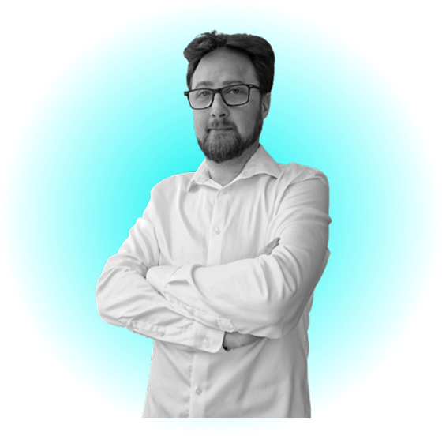
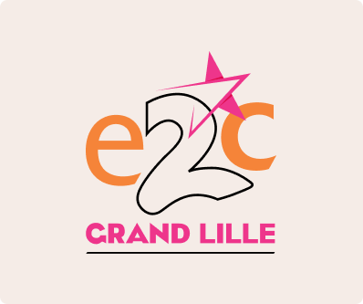
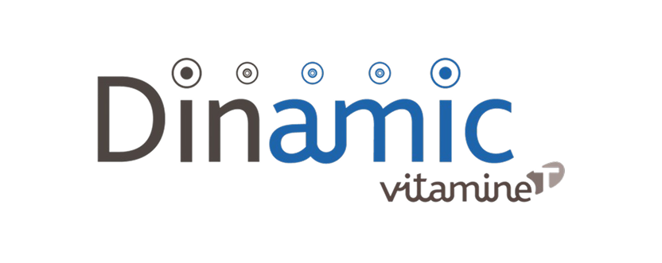
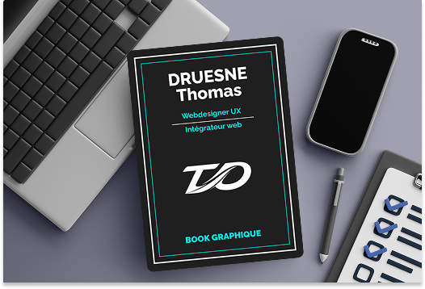

Salutations 👋 !
Bienvenue sur mon
portfolio
Webdesigner UX & Intégrateur WordPress débordant d'enthousiasme et créateur de sites web et d'interfaces utilisateurs passionnés !

Mes projets
Quelques réalisations dont je suis particulièrement fier




Envie d'en voir davantage ?
Voir tous les projets
Mon Book graphique
Une sélection de créations visuelles, logos et supports print
Plus qu'une simple sélection de projets, ce book reflète ma façon d'aborder le design — avec rigueur, intention et attention au détail. Chaque projet présenté ici est l'occasion d'un dialogue entre esthétique et fonctionnalité ; les choix typographiques, la mise en page et l'équilibre visuel sont travaillés avec soin.
Je conçois le design comme un dialogue entre esthétique et fonctionnalité. Mes projets naviguent entre le print et le digital, avec une sensibilité graphique constante et le souci de créer des expériences cohérentes et mémorables.
Parcourez mes travaux et découvrez une approche du design où chaque détail a son importance.
Consulter mon bookMes compétences
Du concept à l'intégration, voici ce que je sais faire
Graphisme
Création de logos, prints, et visuels sur la suite Adobe (Photoshop, Illustrator & InDesign)
UI/UX Design
Conception de wireframes et de maquettes en fonction des besoins et/ou décideurs sur Figma
Intégration & responsive
Pratique de HTML/CSS/JS et du responsive, optimisation du code source des fichiers sur WordPress
Référencement
Mise en place du référencement page par page SEO/GEO sur WordPress (Yoast SEO)
Mon parcours professionnel
Cinq expériences qui ont forgé mon regard sur le design
WEBDESIGNER/INTÉGRATEUR
2021/2022Stage en agence de communication chez « Kamélécom » pour de l'intégration principalement en WordPress.
UI/UX DESIGNER
2022Intégration de l'incubateur numérique « d'Eurotechnologie » sur Figma en projets réels.
WEBDESIGNER UX/INTÉGRATEUR
2022/2023Alternance réalisé chez "Jooxter" pour la maintenance/refonte de leur site web & du montage vidéo
GRAPHISTE/WEBDESIGNER
2024Stage chez "About Ressources" création du branding complet + le site web pour une juriste freelance
WEBDESIGNER UX/INTÉGRATEUR
2025/2026Premier contrat signé chez (inzerty), afin de réaliser des projets web vitrine & e-commerce de A à Z
Mes outils
Les technologies et logiciels qui font partie de mon quotidien
Je maîtrise un ensemble complet d'outils essentiels au webdesign, allant de la création graphique au développement web.
J'utilise notamment Adobe Illustrator et Photoshop pour la création visuelle, ainsi que Figma pour le design d'interfaces modernes et collaboratives. Je travaille également avec InDesign et Premiere pour des supports variés.
Côté intégration je développe avec HTML, CSS et JavaScript, et j'utilise WordPress pour la création de sites dynamiques.
Enfin, j'intègre des outils d'intelligence artificielle comme ChatGPT et Claude pour optimiser mes processus créatifs et techniques.
 Stitch
Stitch Figma
Figma WordPress
WordPress HTML
HTML CSS
CSS Javascript
Javascript Claude
Claude ChatGPT
ChatGPT